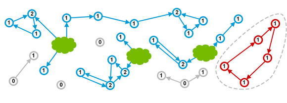
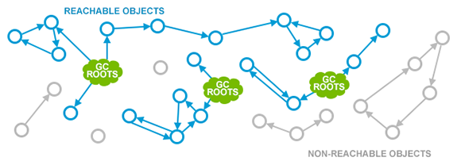
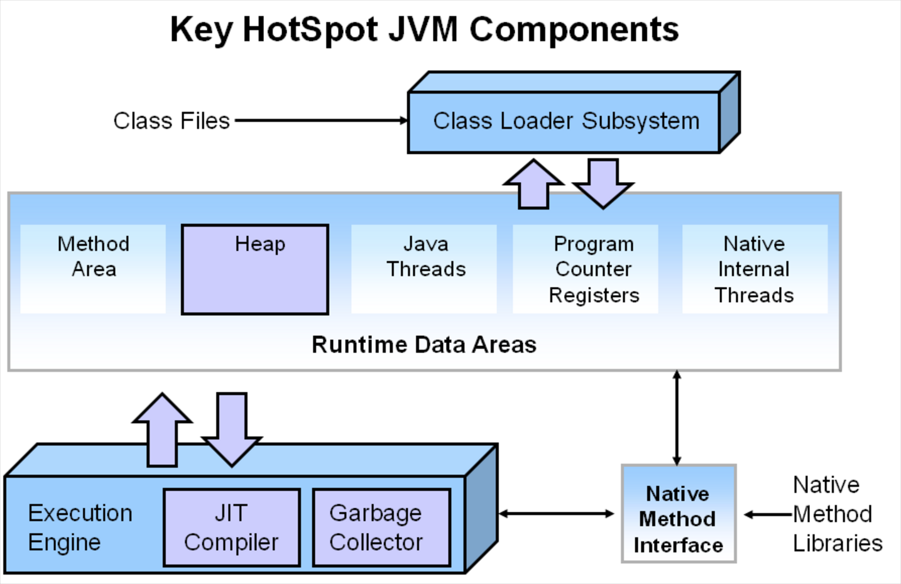
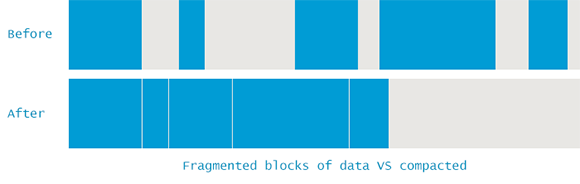
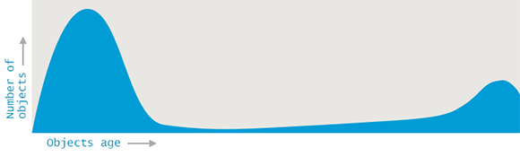
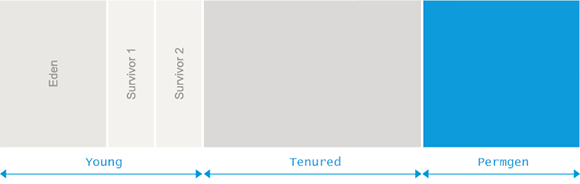
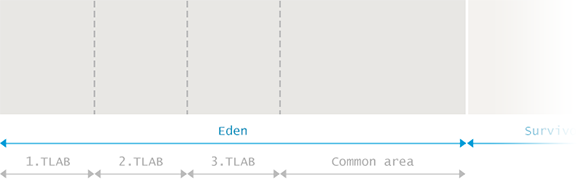
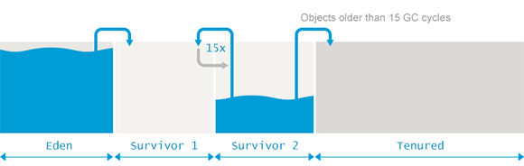

【Java】JVM中的GC垃圾回收
JVM中的GC垃圾回收
推荐阅读
Java Garbage Collection handbook
What Is Garbage Collection?
Garbage Collection is tracking down(追踪) all the objects that are still used and marks the rest as garbage.
memory leak(内存泄露):该内存被声明但未被使用
Reference Counting(引用计数):
可能存在循环引用问题

Mark and Sweep(标记清除):
Garbage Collection Roots(GC Root):
- Local variables(局部变量)
- Active threads(活动线程)
- Static fields(静态字段)
- JNI references(Java Native Interface引用)
JVM用于跟踪所有可到达（活动）对象并确保被非可访问对象(non-reachable)声明的内存可重用的方法称为标记和清除算法
它包括两个步骤：
- Marking(标记) 正在遍历所有可到达的对象，从GC根目录开始，并在所有此类对象的本机内存(native memory)中保留分类帐(ledger)
- Sweeping(扫描) 确保了不可访问对象占用的内存地址可以在下一个分配中重用。
JVM中不同的GC算法，例如Parallel Scavenge，Parallel Mark + Copy或CMS，在实现这些阶段时略有不同，但是在概念上，该过程仍然类似于上述两个步骤。

JVM Architecture Diagram


JVM被划分为三个主要的子系统
- 类装载子系统（Class Loader Subsystem）
- 运行时数据区（Runtime Data Area）
- 执行引擎（Execution Engine）
STW - Stop The World
Java中Stop-The-World机制简称STW，是在执行垃圾收集算法时，Java应用程序的其他所有线程都被挂起（除了垃圾收集帮助器之外）。Java中一种全局暂停现象，全局停顿，所有Java代码停止，native代码可以执行，但不能与JVM交互。
除了GC，JVM下还会发生停顿现象:
JVM里有一条特殊的线程－－VM Threads，专门用来执行一些特殊的VM Operation，比如分派GC，thread dump等，这些任务，都需要整个Heap，以及所有线程的状态是静止的，一致的才能进行。所以JVM引入了安全点(Safe Point)的概念，想办法在需要进行VM Operation时，通知所有的线程进入一个静止的安全点。
除了GC，其他触发安全点的VM Operation包括：
- JIT相关，比如
Code deoptimization, Flushing code cache；
- JIT相关，比如
Class redefinition (e.g. javaagent，AOP代码植入的产生的instrumentation)；
Biased lock revocation取消偏向锁；
Various debug operation (e.g. thread dump or deadlock check)；
参考
现代JVM中的Safe Region和Safe Point到底是如何定义和划分的?
Garbage Collection in Java
Fragmenting and Compacting(碎片和压缩)
每当进行扫描时，JVM必须确保填充有无法访问对象的区域可以重用。这可能会（最终将导致）内存碎片，这与磁盘碎片类似，会导致两个问题：
- 写操作变得更加耗时，因为找到下一个足够大的空闲块不再是微不足道的操作。
- 创建新对象时，
JVM会在连续的块中分配内存。因此，如果碎片升级到没有任何单独的碎片足以容纳新创建的对象的程度，则会发生分配错误。
为了避免此类问题，JVM确保碎片不会失控。因此，在垃圾回收过程中还会发生“内存碎片整理”过程，而不仅仅是标记和清除。此过程将所有可到达的对象彼此相邻放置，从而消除（或减少了）碎片。这是一个说明：

Generational Hypothesis(世代假说)
Weak Generational Hypothesis(弱代假说):大部分对象的生命期很短（die young），而没有die young的对象则很可能会存活很长时间（live long）
如前所述，执行垃圾回收需要完全停止应用程序。同样很明显，对象越多，收集所有垃圾所需的时间就越长。但是，如果我们有可能使用较小的内存区域怎么办？在研究可能性时，一组研究人员观察到，应用程序内部的大多数分配都分为两类：
- 大多数对象很快就变得不被使用
- 还有一部分不会立即无用,但也不会持续(太)长时间
这些观测形成了 弱代假设(Weak Generational Hypothesis)。基于这一假设, VM中的内存被分为年轻代(Young Generation)和老年代(Old Generation)。老年代有时候也称为 年老区(Tenured)。

拆分为这样两个可清理的单独区域，允许采用不同的算法来大幅提高GC的性能。
这种方法也不是没有问题。例如，在不同分代中的对象可能会互相引用, 在收集某一个分代时就会成为 “事实上的” GC root(‘defacto’ GC roots)。
当然,要着重强调的是,分代假设并不适用于所有程序。因为GC算法专门针对“要么死得快”，“否则可能永远活着” 这类特征的对象来进行优化, JVM对收集那种存活时间半长不长的对象就显得非常尴尬了。
Memory Pools(内存池划分)
应该熟悉堆中以下内存池的划分。不太容易理解的地方在于各个内存池中的垃圾收集是如何运行的。注意，在不同的GC算法中，一些实现细节可能有所不同，但是本章中的概念实际上仍然相同。

Eden
Eden 是内存中的一个区域, 用来分配新创建的对象。
由于通常有多个线程同时创建许多对象，因此Eden进一步分为一个或多个,驻留在Eden空间中的Thread Local Allocation Buffer(TLAB for short)线程本地分配缓冲区简称TLAB）
.通过这种缓冲区划分,大部分对象直接由JVM在对应线程的TLAB中分配, 避免与其他线程的同步操作。
如果无法在TLAB内部进行分配（通常是因为那里没有足够的空间），则分配将转移到共享的Eden空间。如果那里没有足够的空间，则会触发Young Generation中的垃圾收集过程以释放更多空间。
如果Young GC也没有在Eden内部产生足够的可用内存，则该对象将分配到老年代空间(Old Generation)。
当Eden区进行垃圾收集时, GC会从根(Roots)目录遍历所有可到达的对象并将它们标记为存活(alive)。
我们曾指出,对象间可能会有跨代的引用, 所以需要一种方法来标记检查从其他分代中指向Eden的所有引用。但是这样做将和世代相传的初衷不合.JVM有一个技巧：卡片标记(card-marking)。本质上，JVM只是在Eden中标记了“脏”对象的粗略位置，这些对象可能与上一代有链接。更多参考the-jvm-write-barrier-card-marking

标记阶段完成后，将Eden中的所有活动对象复制到幸存者区(Survivor spaces)之一。现在，整个Eden被认为是空的，可以重新使用以分配更多对象。这种方法称为“标记-复制”(Mark and Copy)：标记活动对象，然后将其复制（而不移动）到幸存者空间。
Survivor Spaces
Eden区的旁边是两个幸存区(Survivor Spaces), 称为 from 空间和 to 空间,重要的是要注意两个幸存者空间之一始终是空的。
空的那个幸存者空间用于在下一次Young GC时存放收集的对象。整个年轻代(Young)的所有活动对象（包括Eden空间和非空的“from”生存空间）都被复制到“ to”生存空间。GC过程完成后, to区有对象,而 from区里没有对象。两者的角色进行正好切换 。

在两个幸存者空间之间复制活动对象的过程重复进行多次，直到某些对象被认为已经成熟并且“足够旧”为止。请记住，基于世代假设，存活了一段时间的对象预计将继续使用很长时间。
这类“ 年老” 的对象因此被晋升(promoted)到Tenured老年代(Old space)。提升的时候， 幸存者空间的对象不再是复制到另一个幸存者空间,而是迁移到Tenured老年代(Old space), 并在Tenured老年代(Old space)一直驻留, 直到变为不可达对象。
为了确定对象是否“足够老”，可以认为已准备好传播到旧空间，GC会跟踪集合中特定对象的幸存次数。在每一代对象完成了GC之后，那些仍然存在的对象的年龄就会增加。只要年龄超过某个使用 tenuring threshold(期限阈值)， 该对象就会被晋升(promoted)到旧空间(Old space)。
具体的提升阈值由JVM动态调整,但也可以用参数 -XX:+MaxTenuringThreshold 来指定上限。如果设置 -XX:+MaxTenuringThreshold=0 , 则GC时存活对象不在存活区之间复制，直接提升到Old Generation。现代 JVM 中这个阈值默认设置为15个GC周期。这也是HotSpot中的最大值。
如果幸存者空间的大小不足以容纳Young一代中的所有活动对象，那么晋升也可能过早地发生。
Old Generation
Old Generation内存空间的实现要复杂得多。Old Generation通常更大，并且被不太可能成为垃圾的对象所占据。
与Young Generation相比，Old Generation中发生GC的频率更低。此外，由于大多数对象在Old Generation中都还活着，因此不会发生 Mark and Copy (标记和复制)事件。相反，对象会四处移动以最大程度地减少碎片。清理Old space的算法通常建立在不同的基础上。原则上，采取的步骤如下：
- 通过
标志位(marked bit),标记所有通过GC roots可达的对象. - 删除所有不可达对象
- 通过将活动对象
连续复制到老年代空间的开头来压缩老年代空间的内容
通过上面的描述可知, 老年代GC必须明确地进行整理,以避免内存碎片过多。
PermGen
在Java 8之前有一个特殊的空间,称为永久代(Permanent Generation)。这是元数据(metadata)比如classes所在之处.此外，Permgen还保留了一些其他内容，例如内部字符串(internalized strings)。实际上这给Java开发者造成了很多麻烦,因为很难去计算这块区域到底需要占用多少内存空间。预测失败导致的结果就是产生 java.lang.OutOfMemoryError: Permgen space 这种形式的错误。
除非OutOfMemoryError确实是内存泄漏导致的,否则就只能增加permgen的大小，例如下面的示例，就是设置permgen最大空间为 256 MB:
Metaspace
由于预测对元数据的需求是一项复杂且不便的工作，因此在Java 8中删除了Permanent Generation，转而支持Metaspace。从那时起，大多数杂项都移到了常规Java堆中。
当然，像类定义(class definitions)之类的信息会被加载到 Metaspace 中。元数据区位于本地内存(native memory),不再影响到堆中的普通的Java对象.默认情况下，Metaspace大小仅受Java进程可用的本机内存量限制.这样程序就不再因为多加载了几个类/JAR包就导致 java.lang.OutOfMemoryError: Permgen space.注意, 这种不受限制的空间也不是没有代价的 —— 如果 Metaspace 失控, 则可能会导致很严重的内存交换(swapping), 或者导致本地内存分配失败。
如果您仍然希望在这种情况下保护自己，则可以像下面这样限制Metaspace的增长，将Metaspace的大小限制为256 MB：
参考
JVM Garbage Collectors

| 收集器 | 收集范围 | 算法 | 执行类型 | 备注 |
|---|---|---|---|---|
Serial(串行GC) |
新生代 | 复制 | 单线程 | Jvm client模式下默认的新生代收集器 |
ParNew(并行GC) |
新生代 | 复制 | 多线程并行 | serial收集器的多线程版本 |
Parallel Scavenge(并行回收GC) |
新生代 | 复制 | 多线程并行 | 目标是达到一个可控制的吞吐量 吞吐量= 程序运行时间/(程序运行时间 + 垃圾收集时间) 虚拟机总共运行了100分钟。其中垃圾收集花掉1分钟，那吞吐量就是99%。 |
Serial Old(串行GC) |
老年代 | 标记整理 | 单线程 | Serial收集器的老年代版本 主要使用在Client模式下的虚拟机 |
Parallel Old(并行GC) |
老年代 | 标记整理 | 多线程并行 | Parallel Scavenge收集器的老年代版本 |
CMS(并发GC) |
老年代 | 标记清除 | 多线程并发 | 以获取最短回收停顿时间为目标的收集器 |
G1 |
全部 | 复制算法,标记整理 | 多线程 | 以获取最短回收停顿时间为目标的收集器 |
并行(Parallel)：多条垃圾收集线程并行工作，而用户线程仍处于等待状态并发(Concurrent)：垃圾收集线程与用户线程一段时间内同时工作(交替执行)